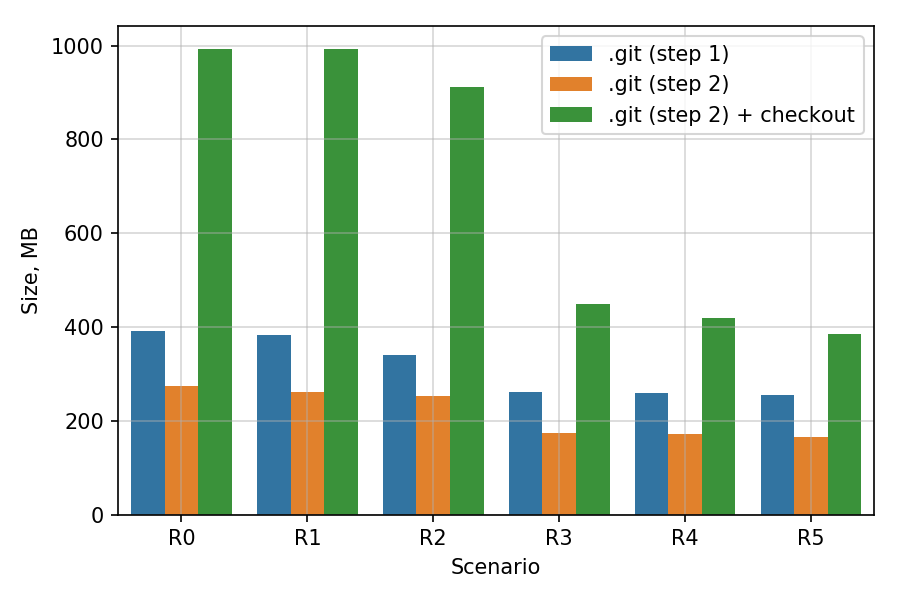

<h1>Software Infrastructure Status</h1> <div style="font-size: 90%;"> - Git 2.26.2 installed on interactive nodes by SDCC admins - Supports partial clones - ROOT6 is available at RACF from `/afs/rhic/star/ROOT` - 6.16.00 with TTable support and latest 6.20.06 - 64-bit libraries with optimization and debug info - Various versions of GCC compiler available from<br> `/cvmfs/sft.cern.ch/lcg/contrib/gcc/` - To activate, e.g. gcc 8.3.0 source /cvmfs/sft.cern.ch/lcg/contrib/gcc/8.3.0/x86_64-centos7-gcc8-opt/setup.sh - Next update CMake, install python3, ... - First attempt to rebuild RPMs from source with modified prefix (`/afs/...`) not very successful </div>
<h1>CVS to Git Migration</h1> - **Phase 1:** Migration from CVS to Git - Most of the machinery is ready and available - Primary concerns are: Repository size and unfamiliar workflow <hr style="width: 90%;"> - **Phase 2:** Offer alternative build system based on CMake - Current build system (Cons) can co-exist with CMake - Principle requirement is transparency of integration (i.e. libraries build with either tool need to produce equivalent results) - **Phase 3:** Better (quick feedback) test suite and automated CI - Main purpose is to reject erroneous changes before they get into the history
<h1>Cleaning up Git repository</h1> <div style="font-size: 95%;"> - Clean up is performed in two steps - **Step 1:** Exclude select directories from conversion with `cvs2git` (a.k.a. `svn2git`) - **Step 2:** Remove individual files (large or unused blobs) - Main inconvenience is that one cannot expect identical file structures for same tags in CVS and Git due to modified history <table style="margin: -1.2em 0 0 -0.5em;"> <tr><td style="vertical-align: top;"> - Considered several clean-up scenarios with increasing number of subdirectories removed - R5 excludes more directories than R4 than R3 than ... than R0 - Notably, in R3 we exclude all external generators (Pythin{6,8}, HIJING, UrQMD, etc) present in CVS - Bare sizes under 200MB achievable <td style="width: 50%; vertical-align: bottom;">  </table> </div>
<h1>Partial Clone, Sparse Checkout</h1> - Sparse checkout (i.e. checkout of specific subdirectories selected by the user) is available since early versions of Git and works reliably. UI improved in recent versions - Partial clone is a relatively new feature (documented in recent versions). UI does not appear very stable - We provide a simple interface to help CVS users with adoption of Git<br> https://github.com/star-bnl/star-git-tools <table> <tr> <td style="width: 60%;"> CVS like checkout <pre style="font-size: 0.85em;"><code data-trim class="shell"> $ git star-checkout StRoot/StMuDSTMaker StRoot/StPicoEvent Cloning into 'star-cvs'... $ tree -a -L 2 star-cvs/ star-cvs/ |-- .git | ... `-- StRoot |-- StMuDSTMaker `-- StPicoEvent </code></pre> <td> Manageable size <pre style="font-size: 0.85em;"><code data-trim class="shell"> $ du -b --si -d1 star-cvs/ 29M star-cvs/.git 1.3M star-cvs/StRoot 30M star-cvs/ </code></pre> </table>